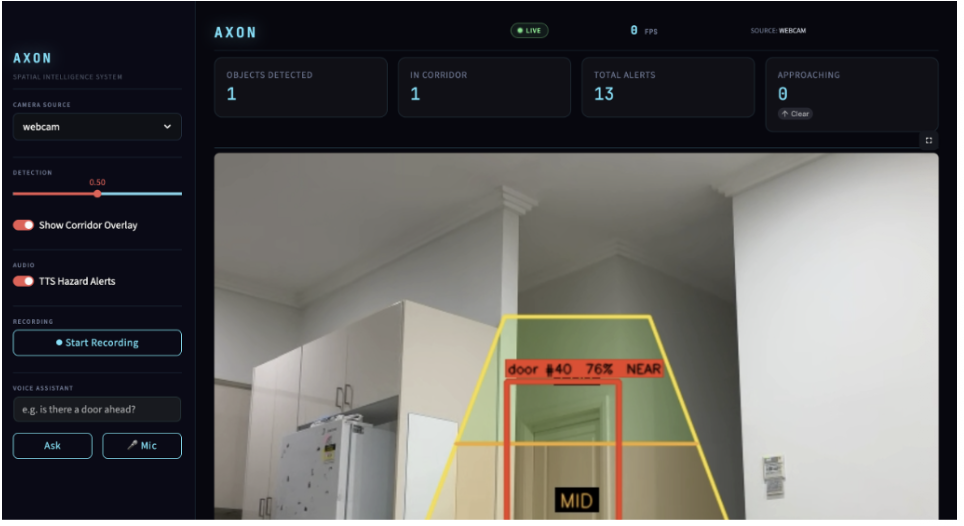
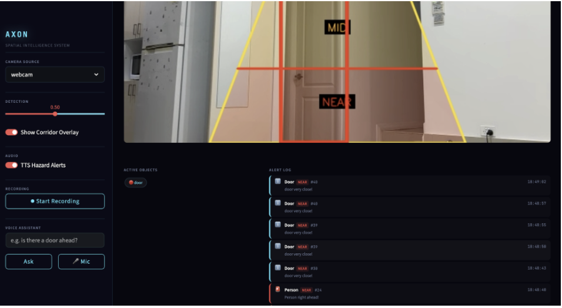
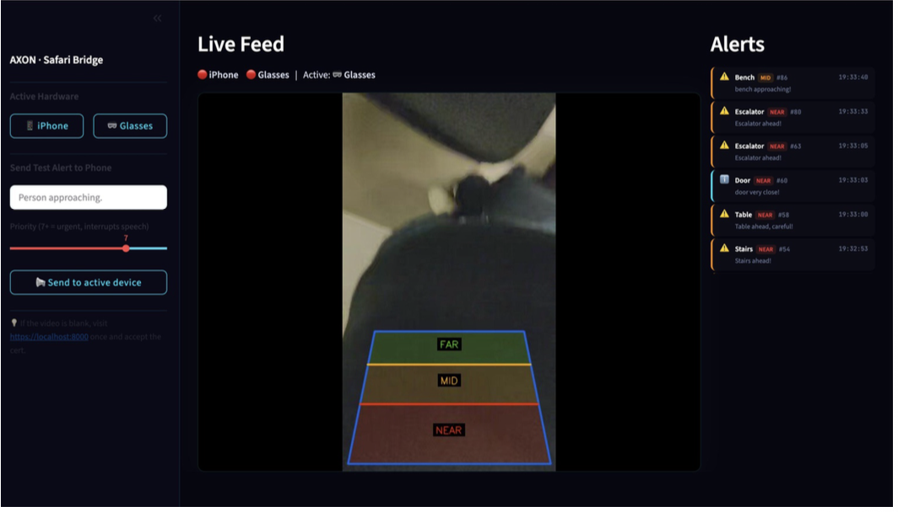
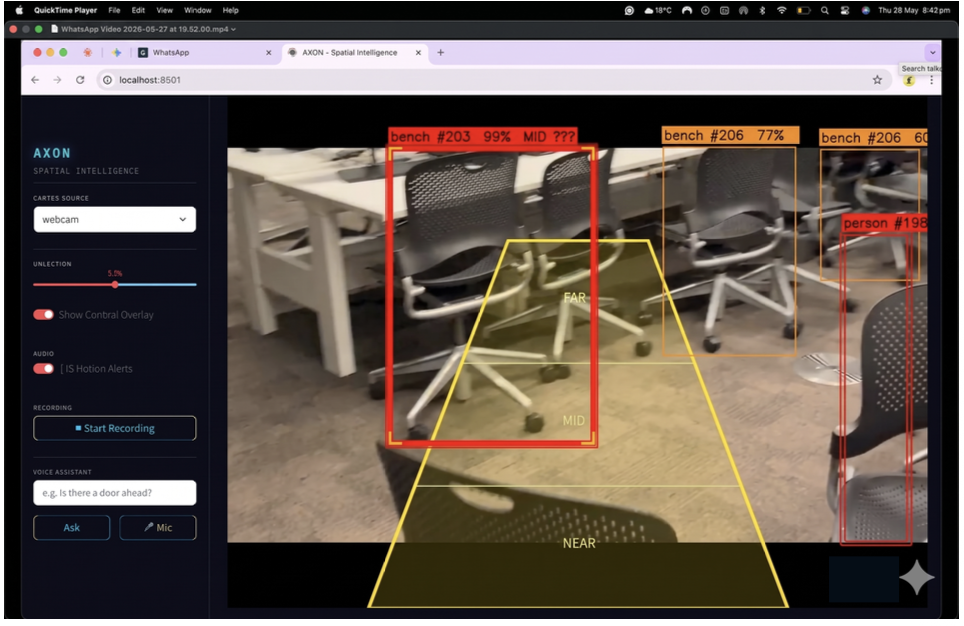
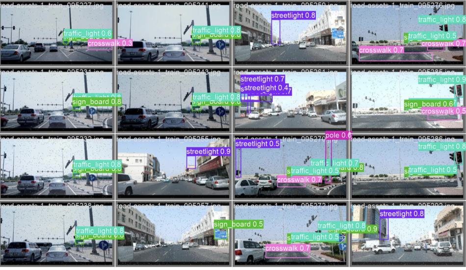
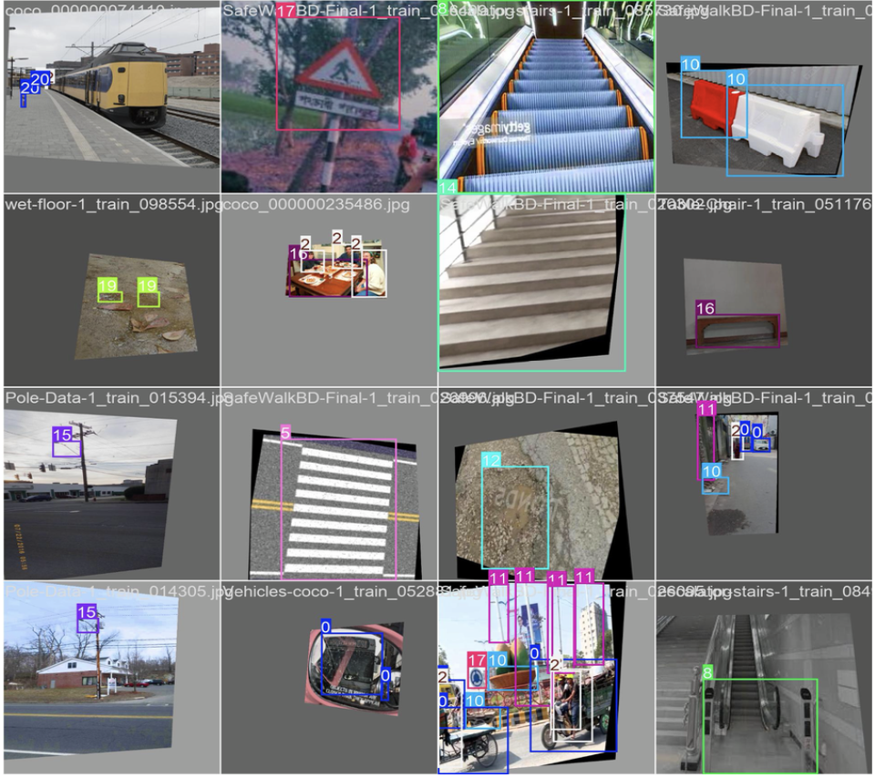

AXON is a wearable agentic spatial assistant that transforms a smartphone into a real-time navigation guardian for visually impaired pedestrians — powered by a dual-loop AI architecture running on consumer hardware.
285 million people worldwide live with visual impairment. Every step poses a potential threat — unexpected kerbs, wet surfaces, silent cyclists, construction barriers that appear where none existed before. The tools we give them leave dangerous gaps.
Only detect obstacles after physical contact. No advance warning, no context about what the obstacle is, and no guidance on how to avoid it.
Cost USD $25,000–$60,000, require 18–24 months of training, and are available to less than 2% of blind individuals globally.
Require manual activation every time — point, open, wait. No passive monitoring, no real-time hazard alerts, no contextual scene understanding.
At 30 km/h a vehicle covers 8.3 m/s. A system with 800ms latency loses 6.7 m of reaction space before the first alert fires. AXON must be reflexively fast and intelligently conversational — simultaneously, on the same feed.
AXON runs two completely independent processing pipelines sharing the same camera feed but never competing for resources. Tier 1 is always on. Tier 2 activates on demand. Neither waits for the other.
Runs automatically every 50ms, fully offline. YOLOv12-S processes every frame with ByteTrack tracking, maps detections onto a perspective-corrected trapezoid walking corridor (FAR/MID/NEAR zones), and fires priority-weighted TTS alerts. A 10-frame rolling window detects approaching objects via bounding box growth.
Activated on-demand via microphone button. Whisper transcribes speech offline (int8, base model), IntentRouter classifies the query (DETECTION / NAVIGATION / SCENE), then the system responds from a 30-frame DetectionBuffer or GPT-4o-mini — all while Tier 1 continues uninterrupted.




Every frame, AXON maps all detections onto a perspective-corrected trapezoid centred on the user's walking path. Objects in NEAR trigger immediate TTS. MID fires an early warning. FAR is logged silently. A 10-frame rolling window flags anything whose bounding box is growing — i.e. approaching.
Real-time hazard detection running on MacBook M4 Air via Apple MPS inference. Camera streaming from Meta Ray-Ban glasses through Android Bluetooth bridge and iPhone via Safari WebSocket.
YOLOv12-Small evaluated on 2,840 held-out test images. All metrics from final best.pt checkpoint after 445 training epochs across 3 sequential fine-tuning runs.
Training Progression — 445 Epochs · 3 Fine-Tuning Runs

No existing public dataset covers all 23 pedestrian navigation hazard classes. We assembled a custom dataset from 39+ public sources via Roboflow Universe, selective MS-COCO 2017 classes, and real-world walking video frames — through four sequential phases of collection, harmonisation, balancing, and iterative expansion.
Curated from 39+ public sources
Cleaned and verified annotations
Across 3 functional categories

A2C2f · 9.26M params
HTTPS WebSocket server
M4 chip GPU inference
Offline STT · int8 quant
Scene description VLM
DAT SDK · Bluetooth
getUserMedia · WebSocket
Monitoring dashboard
Jetpack Compose · API 33+
Tesla T4 · training
Multi-object tracking
TTS · M4A audio cache
42028: Deep Learning and Convolutional Neural Network · Autumn 2026
Master of IT (Data Analytics) — University of Technology Sydney